شرح كامل للمنصة الجديدة متعددة المراكز: شو هي، كيف بيسجّل المركز، كيف بيشتغل عليها المدير والمعلّم وولي الأمر، ووين وصلنا.
جرّبوها بأنفسكمhttps://saas--madaya-demo.netlify.app
بيانات وهمية. الدخول بالكود 123456 أو كلمة المرور demo1234.
الإصدار التجريبي — 1 تشرين الثاني 2026المستودع: oz819/madaya-latest (خاص)
المحتويات
1الفكرة باختصار
2الروابط وحسابات التجربة
3الأدوار: مين بيشوف شو
4كيف بيسجّل مركز جديد
5صفحة المركز العامة وهويته
6تسجيل الدخول
7إضافة المعلّمين والمدراء
8إدخال الطلاب
9شغل المعلّم اليومي
10أدوات المدير
11ولي الأمر
12الجوال وبدون إنترنت والإشعارات
13لوحة إدارة المنصة والخطط
14الأمان وعزل البيانات
15وين وصلنا وشو الخطوة الجاية
1الفكرة باختصار
برنامج مضايا لمتابعة حلقات القرآن صار منصة بتخدم أي عدد من المراكز. كل مركز بيسجّل لحاله خلال دقائق، وبياخد نسخته الخاصة من البرنامج باسمه وشعاره وألوانه، وبياناته معزولة تمامًا عن باقي المراكز.
المركز بيسجّل←بيأكّد بريده←معالج إعداد (4 خطوات)←بيدعي معلّميه←بيبلّشوا شغل
شو تغيّر عن برنامج مضايا القديم؟
قبل
هلق
مركز واحد (مضايا)
عدد غير محدود من المراكز، كل واحد إلو رابطه: /madaya، /doha…
الحسابات بنضيفها نحنا يدويًا
صاحب المركز بيسجّل لحاله، وبيدعي فريقه بالبريد أو واتساب
الهوية خضراء ثابتة
هوية بيضاء حديثة، وكل مركز بيختار من 4 لوحات ألوان وبيرفع شعاره
الصفحة الرئيسية فيها شرح للمزايا
صفحة المركز صارت نبذة عنه وشعاره وطرق التواصل وملاحظات بيكتبها المدير
—
لوحة إلنا لإدارة كل المراكز، وخطط اشتراك بحدود لعدد الطلاب
وكل اللي كان موجود ضل موجودالحفظ والمراجعة والتلاوة والتلقين والحضور والعربية والاختبارات والتقارير ورابط ولي الأمر ولوحة الشرف وسجل التعديلات والعمل بدون إنترنت. كلها شغالة متل ما هي، بس صارت لكل مركز لحاله.
2الروابط وحسابات التجربة
روابط النسخة التجريبية
الصفحة
الرابط
صفحة المنصة (ومنها "سجّل مركزك")
saas--madaya-demo.netlify.app/login
تسجيل مركز جديد
saas--madaya-demo.netlify.app/signup
صفحة مركز مضايا
saas--madaya-demo.netlify.app/madaya
صفحة مركز الدوحة (وهمي)
saas--madaya-demo.netlify.app/doha
نموذج تسجيل طالب لأي مركز
…/madaya/register
لوحة الشرف لأي مركز
…/madaya/honor
حسابات التجربة
كلها بتفوت بالكود 123456 أو بكلمة المرور demo1234:
البريد
مين هو
جرّب فيه
admin@demo.com
مدير مركز مضايا
كل شي: الإدارة، الدعوات، الاستيراد، بيانات المركز
teacher@demo.com
معلّم بمضايا
شو بيشوف المعلّم العادي
doha@demo.com
مدير مركز الدوحة
تأكّد إنو ما بيشوف ولا طالب من مضايا
both@demo.com
معلّم بالمركزين
مبدّل المراكز فوق
super@demo.com
إدارة المنصة (نحنا)
قائمة المراكز، تفعيل وإيقاف، تغيير الخطة
انتبهوا بالنسخة التجريبية
البيانات مشتركة بين كل اللي بيجرّبوا، وأي تعديل بياخد كم ثانية ليتحفظ.
ما بتنبعت إيميلات حقيقية. الكود دايمًا 123456، ورابط الدعوة بيطلع على الشاشة لتنسخوه.
الموقع الحقيقي madayacentre.com وبياناته ما انلمسوا.
الروابط بعد الإطلاق
مضايا بتضل على madayacentre.com متل ما هي.
باقي المراكز بتصير على madayacentre.com/doha، أو أحسن: على دومين خاص بالمنصة متل halaqat.app/dohaقرار للتيم
مركز بدو دومينه الخاص منربطه إلو، متل ما مضايا مربوطة على دومينها.
3الأدوار: مين بيشوف شو
كل شخص إلو حساب واحد (بريد)، وبيقدر يكون عضو بأكتر من مركز، وبكل مركز إلو دور.
الدور
شو بيقدر يعمل
شو ما بيقدر
صاحب المركز مدير + مالك
كل شي جوّا مركزه: بيانات المركز وشعاره وألوانه، دعوة مدراء ومعلّمين، الحلقات، الطلاب، الإعدادات، سجل التعديلات والمحذوفات.
ما حدا بيقدر ينزّل رتبته أو يحذفه من المركز.
مدير
متل صاحب المركز تقريبًا: إدارة الفريق والحلقات والطلاب والتقارير.
بيفتح رابط خاص بابنه: الحضور، الحفظ، الملاحظات، باسم المركز وشعاره. ما بيحتاج حساب.
ما بيشوف غير ابنه.
إدارة المنصة نحنا
قائمة كل المراكز وأعداد طلابها، تفعيل وإيقاف مركز، تغيير خطته.
ما بتشوف بيانات المراكز اليومية (الطلاب والتسميع).
معلّم بأكتر من مركزإذا معلّم بيدرّس بمركزين، بيفوت بنفس البريد، وبيطلعله فوق مبدّل بيختار منه المركز. كل مركز بيشوف بياناته لحاله.
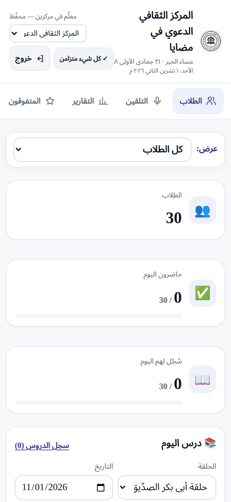
معلّم بالمركزين: مبدّل المراكز بأعلى الشاشة
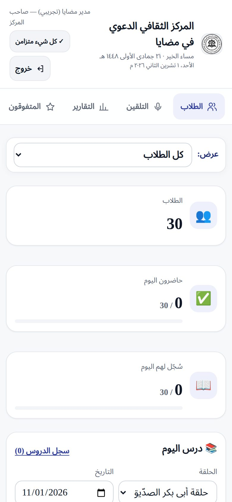
مدير مضايا: كل التبويبات بما فيها الإدارة
4كيف بيسجّل مركز جديد
صاحب المركز بيعمل كل شي لحاله، وما بيحتاج يتواصل معنا.
بيفتح صفحة المنصة وبيضغط "سجّل مركزك مجانًا"، أو بيفوت مباشرة على /signup.
بيعبّي النموذج: اسم المركز، الرابط (بيتقترح لحاله من الاسم، أحرف إنجليزية صغيرة)، الدولة، المدينة، اسمه، بريده، وكلمة مرور.
بيأكّد بريده: بيوصله إيميل فيه رابط تأكيد. هاد بيمنع التسجيل الوهمي. بالنسخة التجريبية ما في إيميل، بيكمّل مباشرة
معالج الإعداد بأربع خطوات: (1) بيانات المركز، (2) الشعار والألوان، (3) أول حلقة وأسماء طلابها، (4) دعوة أول معلّم. أي خطوة بيقدر يتخطّاها ويرجعلها بعدين.
بيدخل على مركزه وبيلاقي الحلقة والطلاب جاهزين، وبيصير هو صاحب المركز ومديره.
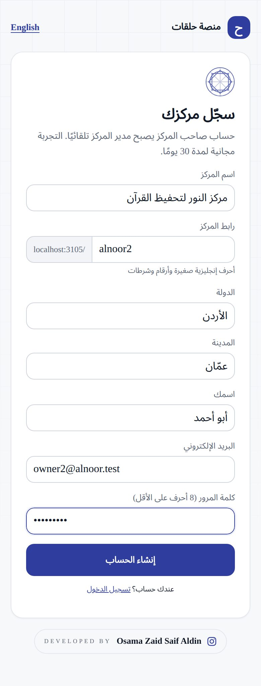
نموذج "سجّل مركزك"
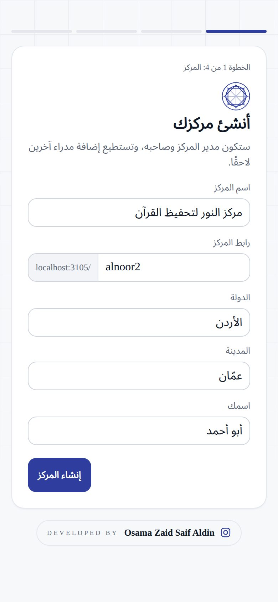
المعالج 1: بيانات المركز
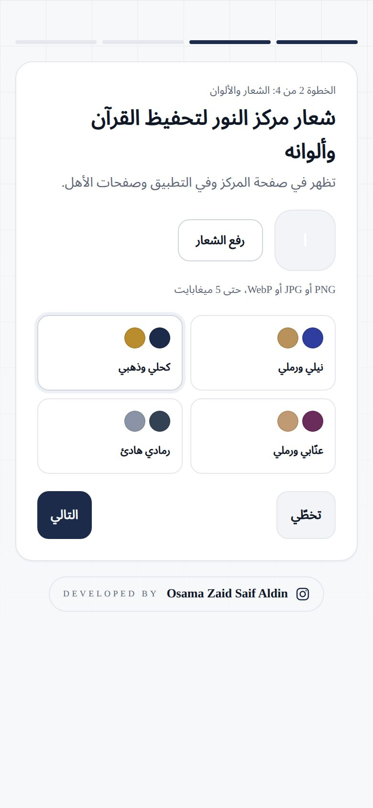
المعالج 2: الشعار ولوحة الألوان
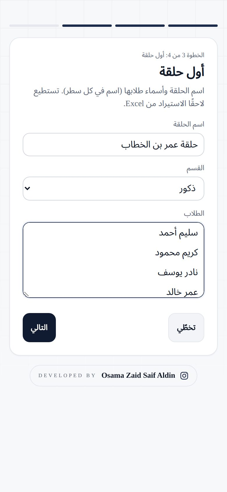
المعالج 3: أول حلقة، وكل سطر اسم طالب
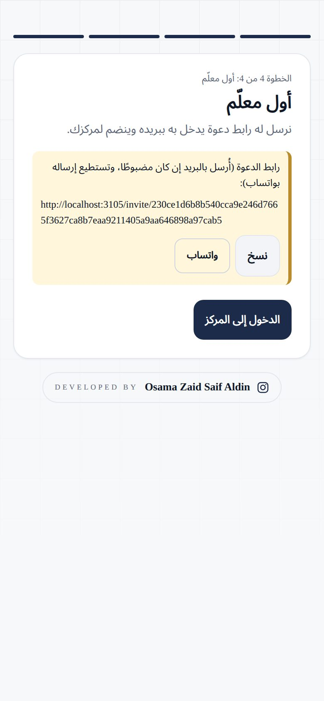
المعالج 4: دعوة أول معلّم، والرابط جاهز للنسخ أو واتساب
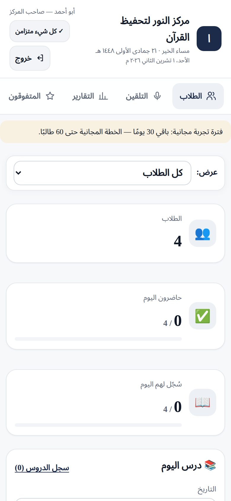
المركز الجديد جاهز، مع تنبيه الفترة التجريبية
شو بيصير ورا الكواليس
المركز الجديد بيبلّش بـفترة تجريبية 30 يوم على الخطة المجانية (حتى 60 طالب).
بيطلع المركز بلوحتنا (إدارة المنصة)، ومنقدر نفعّله أو نوقفه أو نغيّر خطته.
في حماية من التسجيل الكتير: حد أقصى لعدد المراكز الجديدة بالساعة.
5صفحة المركز العامة وهويته
لكل مركز صفحة عامة على رابطه (/madaya مثلًا). فيها اسم المركز وشعاره، ونبذة عنه، وأزرار: سجّل في الحلقات، دخول المعلّمين والإدارة، لوحة الشرف. وتحت: واتساب وإنستغرام وفيسبوك والعنوان، ومكان لملاحظات إضافية (مواعيد، إعلانات…). وبالخلفية نجمة هندسية متحركة بألوان المركز.
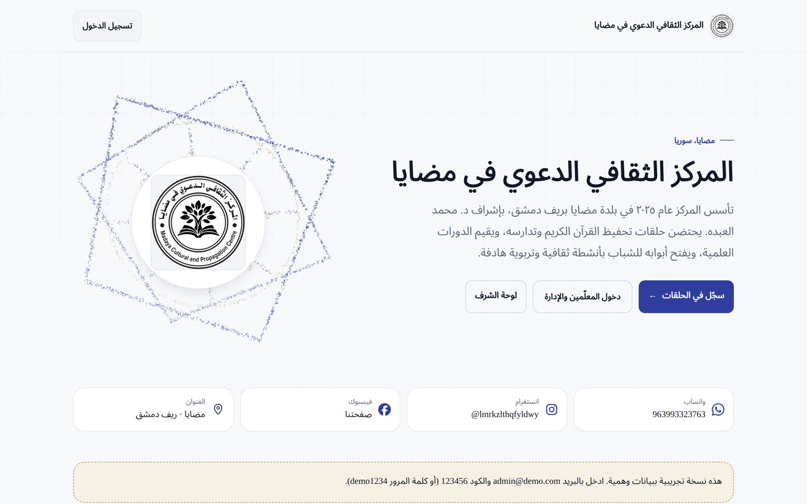
صفحة مركز مضايا على الكمبيوتر
كيف المدير بيعدّلها
من الإدارة ← بيانات المركز والهوية:
اسم المركز، النبذة، الدولة، المدينة، العنوان.
رفع الشعار (PNG أو JPG أو WebP، لحد 5 ميغا، وبيتصغّر لحاله).
الدعوة صالحة 14 يوم. وإذا المعلّم إلو حساب بمركز تاني، بينضاف المركز الجديد لحسابه بدون ما يعمل حساب جديد.
الطريقة 2: إضافة مباشرة
من الإدارة ← المحفّظون والمدراء: بيكتب الاسم والبريد وكلمة مرور (8 أحرف أو أكتر)، وبيعطيها للمعلّم. ومن نفس المكان بيعدّل الاسم أو بيغيّر كلمة المرور أو بيوقف الحساب.
لحماية الحسابات: المدير ما بيقدر يغيّر بريد أو كلمة مرور معلّم إذا هالحساب عضو بمركز تاني.
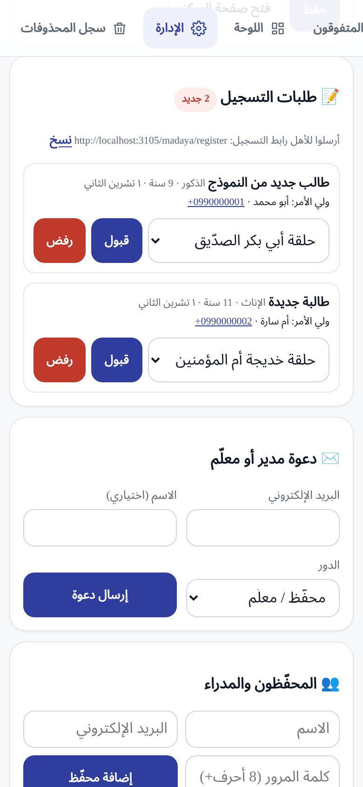
دعوة مدير أو معلّم، وتحتها قائمة المحفّظين والمدراء
8إدخال الطلاب
في 4 طرق، وكل مركز بيستعمل اللي بيناسبه:
الطريقة
كيف
معالج الإعداد
أول حلقة: كل سطر اسم طالب.
استيراد Excel أو CSV
من الإدارة ← استيراد طلاب: بينسخ الأعمدة من Excel (الاسم، الحلقة، اسم ولي الأمر، الهاتف) وبيلزقها، أو بيرفع ملف CSV. وفي حلقة افتراضية للطلاب اللي ما إلهم حلقة.
نموذج التسجيل العام
رابط /madaya/register بينبعت للأهالي. ولي الأمر بيعبّي بيانات ابنه، وبيوصل الطلب للمدير بـطلبات التسجيل، وهو بيقبله بحلقة معيّنة أو بيرفضه.
إضافة يدوية
من قائمة الطلاب، متل ما كان.
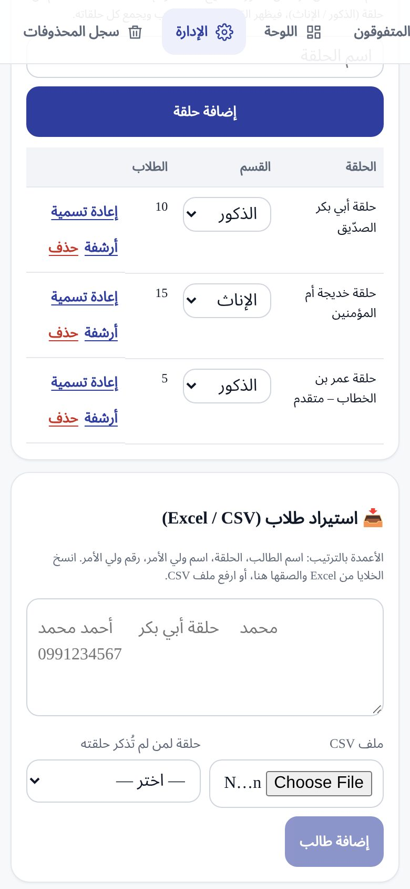
استيراد من Excel أو CSV
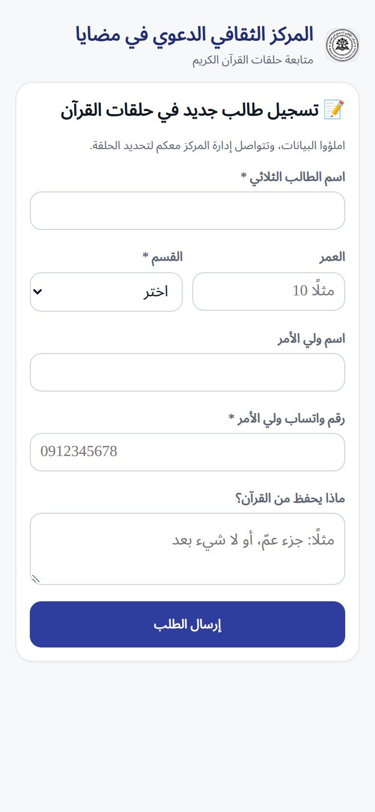
نموذج التسجيل العام للأهالي
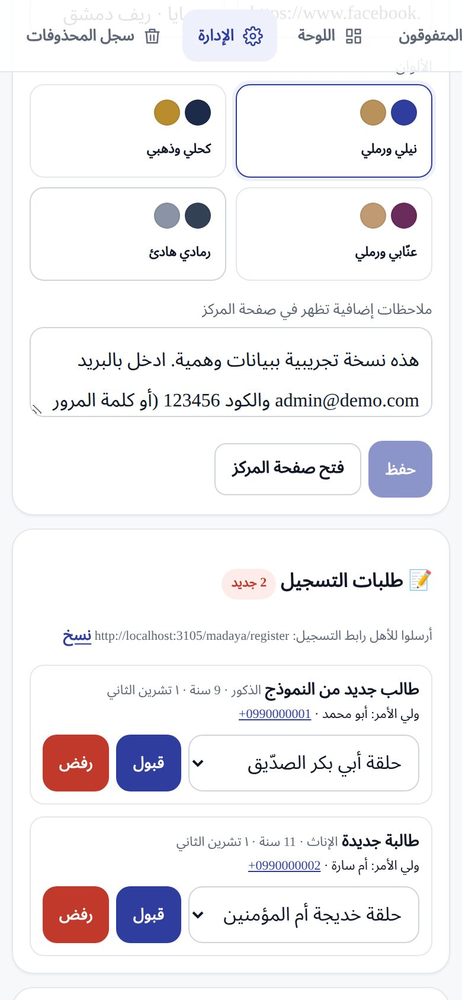
طلبات التسجيل عند المدير: قبول بحلقة أو رفض
حدود الخطة بتنطبق على كل الطرق. مثلًا بالخطة المجانية، الطالب رقم 61 ما بينضاف، وبتطلع رسالة إنو المركز وصل للحد الأقصى.
9شغل المعلّم اليومي
التبويبات تحت الهيدر: الطلاب، التلقين، التقارير، المتفوقون. والمدير عنده كمان: اللوحة، الإدارة، سجل المحذوفات، سجل التعديلات.
الطلاب وبطاقة الطالب
تحضير اليوم: حضور وغياب وتأخير لكل الحلقة بضغطة.
درس اليوم للحلقة، ونجوم الحفظ بالشهر.
بطاقة الطالب فيها أقسام: الحفظ، المراجعة، التلاوة، التلقين، العربية (كتب ومستويات)، التربية (ملاحظات)، الاختبارات، والخريطة (خريطة المصحف بشو حفظ).
من البطاقة: نسخ رابط ولي الأمر أو إرساله على واتساب، تعديل بيانات الطالب، أرشفته أو حذفه (بيروح لسجل المحذوفات وبينرجع).
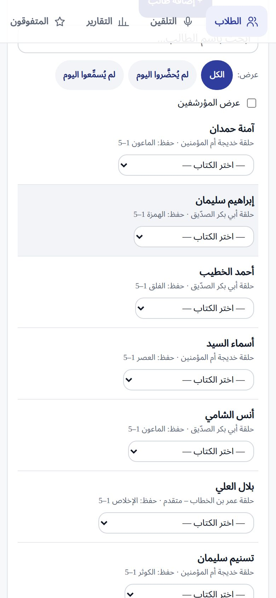
قائمة الطلاب مع الفلاتر
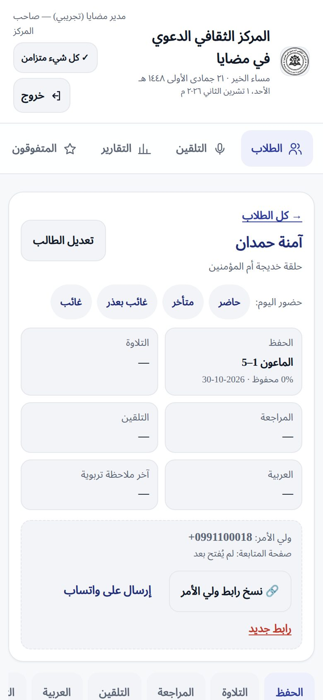
بطاقة الطالب: الحضور والأقسام
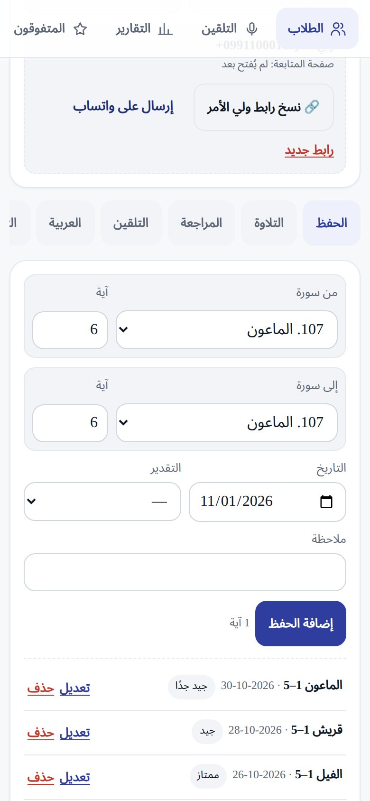
البطاقة: رابط ولي الأمر والسجل
التلقين
جلسة تلقين لحلقة كاملة: بيختار الحلقة والتاريخ ومن أي سورة وآية لوين، وبيعلّم مين من الطلاب حضر الجلسة.
التقارير والإرسال لأولياء الأمور
تقرير يومي أو أسبوعي أو شهري لكل الطلاب أو لحلقة: نسبة الحضور، اللي سمّعوا، ملخّص الحفظ. منه إرسال تقارير الحلقة لأولياء الأمور على واتساب (رسالة جاهزة لكل طالب)، وتصدير PDF أو طباعة أو Excel أو CSV.
المتفوقون ولوحة الشرف
ترتيب أسبوعي أو شهري حسب نسب بيحدّدها المدير (الحفظ، الحضور، التلاوة والمراجعة، التربية والسلوك، الاختبارات، الدورات). ولوحة الشرف العامة (/madaya/honor) بتعرض المتفوقين والشهادات الجديدة، والمدير بيقرّر إذا بتكون ظاهرة للعامة.
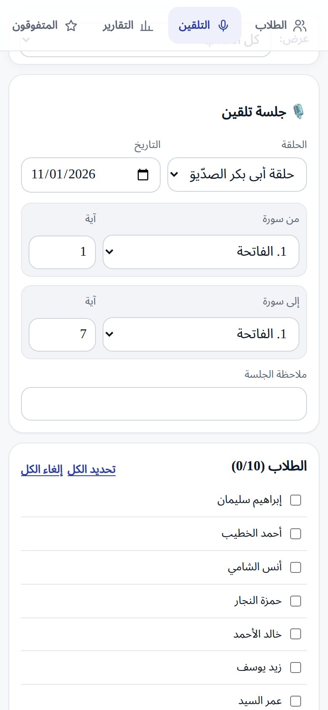
جلسة تلقين
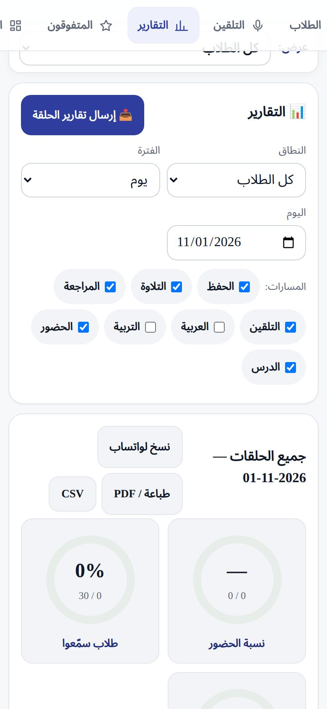
التقارير والإرسال والتصدير
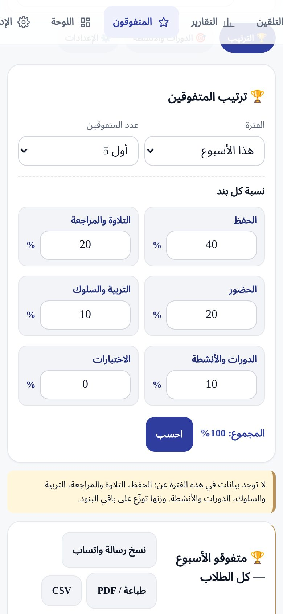
المتفوقون ونسب الترتيب
10أدوات المدير
التبويب
فيه
اللوحة
عدد الطلاب والحضور بالأسبوع وطلبات التسجيل الجديدة والحلقات اللي لسا ما سجّلت تقارير اليوم، وجدول الحلقات وأعدادها، وتنبيه الغياب المتكرر.
الإدارة
بيانات المركز والهوية، الدعوات، المحفّظون والمدراء، الحلقات، كتب العربية، استيراد الطلاب، طلبات التسجيل، إعدادات لوحة الشرف وتنبيه الغياب.
سجل التعديلات
كل إضافة وتعديل وحذف: مين عمله، وإيمتى، وشو كان قبل وبعد. وبيتفلتر حسب المستخدم ونوع البيانات والتاريخ.
سجل المحذوفات
أي شي انحذف (طالب، حلقة…) بيروح لهون وبينرجع بضغطة، أو بينحذف نهائيًا.
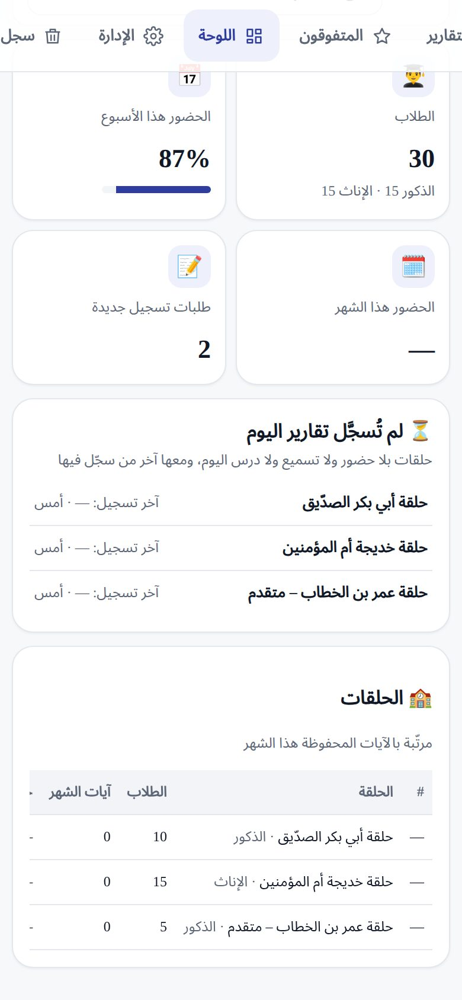
اللوحة
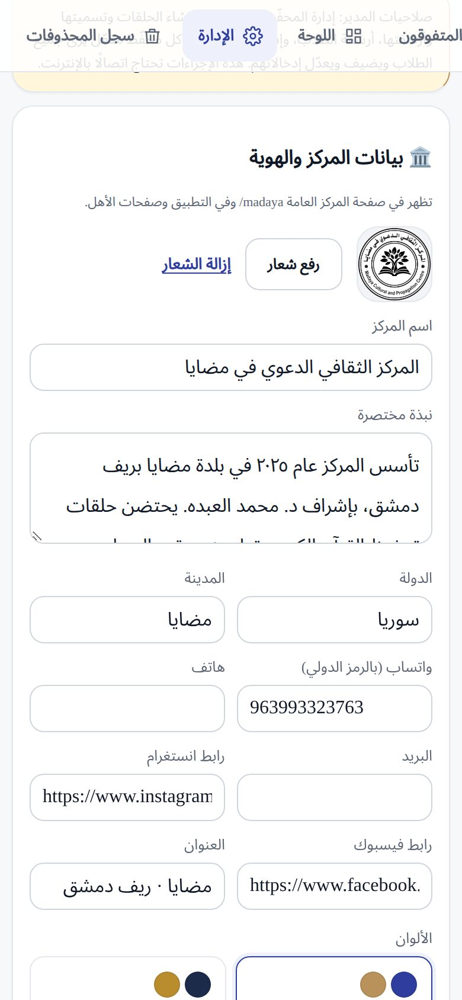
الإدارة: الحلقات والاستيراد
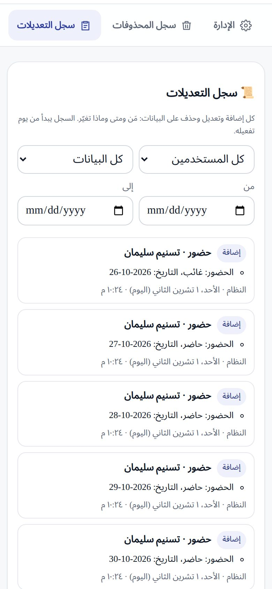
سجل التعديلات
11ولي الأمر
لكل طالب رابط خاص بيبعته المعلّم من بطاقة الطالب (نسخ أو واتساب).
ولي الأمر بيفتحه بدون حساب، وبيشوف حضور ابنه وحفظه وملاحظاته، باسم المركز وشعاره.
ولي الأمر هو كمان اللي بيعبّي نموذج التسجيل العام لابنه.
12الجوال وبدون إنترنت والإشعارات
تطبيق على الشاشة الرئيسية: من المتصفح "إضافة إلى الشاشة الرئيسية"، فبيصير متل التطبيق بأيقونة. على أندرويد وآيفون.
بدون إنترنت: المعلّم بيسجّل حضور وتسميع وهو بلا نت، وبتنبعت التغييرات لحالها لما يرجع النت.
الإشعارات: كل مستخدم بيقدر يفعّل إشعارات على جهازه. البنية جاهزة، وبيضل تفعيل مفاتيح الإشعارات بالموقع الحقيقي، وبعدين تذكيرات تلقائية (غياب، تقارير).
تطبيق بالمتاجر (React Native): مش مبني هلق. كتبنا ملاحظة بشو بيحتاج: حساب Google Play بـ25$ مرة وحدة، وApple بـ99$ بالسنة، والمراجعة عادة من يوم لـ3 أيام. الخادم نفسه جاهز إلو بدون تعديل.
13لوحة إدارة المنصة والخطط
لوحة إلنا نحنا (/super)، بتطلع بس لحسابات إدارة المنصة. فيها كل المراكز: الاسم، الرابط، الدولة، عدد الطلاب والأعضاء، الحالة، الخطة، تاريخ التسجيل. ومنها منفعّل المركز أو منوقفه أو منغيّر خطته.
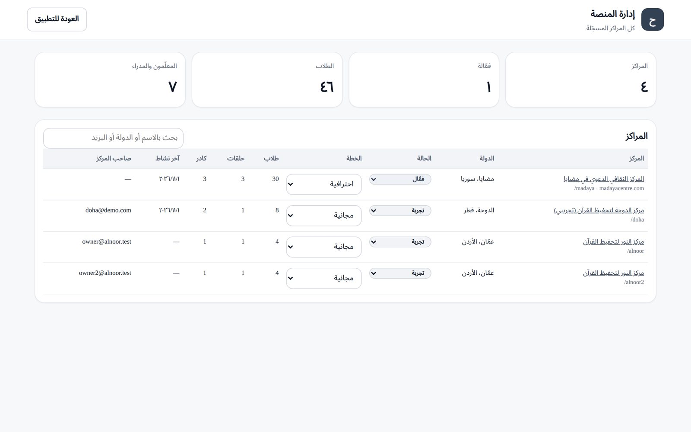
لوحة إدارة المنصة
الخطط (حدود عدد الطلاب)
الخطة
الطلاب
المجانية FREE
حتى 60
الأساسية BASIC
حتى 400
الاحترافية PRO
بلا حد (مضايا عليها)
حالات المركز
الحالة
المعنى
تجريبي
أول 30 يوم بعد التسجيل
فعّال
مفعّل من قبلنا
موقوف
ما حدا بيقدر يفوت، وصفحته العامة بتختفي
لسا مش مربوطالدفع الإلكتروني. هلق تغيير الخطة يدوي من لوحتنا. وانتهاء الفترة التجريبية بيطلع تنبيه بس، وما بيوقف المركز لحاله. الأسعار وطريقة الدفع قرار للتيم
14الأمان وعزل البيانات
أهم شي بمنصة فيها أكتر من مركز إنو ولا مركز يشوف بيانات غيره. وهاد مضمون جوّا قاعدة البيانات نفسها، مش بس بالشاشات.
كل سجل مختوم بمركزه: كل طالب وحلقة وتسميع وحضور… إلو رقم مركزه.
القاعدة نفسها بترفض: أي طلب بيرجعله بس بيانات المركز اللي المستخدم فاتح عليه. حتى لو صار خطأ بشاشة أو حدا جرّب يتلاعب بالطلبات، ما بيطلع صف من مركز تاني.
ما في ربط بين مراكز: ما بينفع تحط طالب من مركز بحلقة من مركز تاني، حتى لو حدا عرف رقمه.
صلاحيات المدير لكل مركز لحاله: مدير مضايا ما إلو أي صلاحية بالدوحة.
الشعار: صور بس (بدون SVG)، ولحد 5 ميغا.
حماية من الإزعاج: حدود لعدد المراكز الجديدة بالساعة، وعدد طلبات التسجيل من نفس الرقم.
مفحوص
95 فحص آلي على نسخة من قاعدة البيانات الحقيقية (بنيتها بلا بيانات). بتتأكد إنو بيانات مضايا انتقلت كلها، وإنو كل محاولة وصول بين مركزين بتفشل (قراءة، كتابة، دوال المدير، الروابط)، والدعوات، والمستخدم بمركزين، والإيقاف، وحدود الخطط. كلهم ناجحين.
17 فحص بالمتصفح على النسخة التجريبية: تسجيل مركز، المعالج، الدعوة، التبديل بين المراكز، نموذج التسجيل، تعديل صفحة المركز… ومنها فحوصات على مقاس الجوال.
15وين وصلنا وشو الخطوة الجاية
البند
الحالة
ملاحظة
صفحة المركز: نبذة وشعار، وقابلة للتعديل
جاهز
الهوية الجديدة و4 لوحات ألوان والوضع الداكن
جاهز
الألوان قابلة للتغيير
تعدد المراكز وعزل البيانات
جاهز
95 فحص
سجّل مركزك ومعالج الإعداد
جاهز
الدعوات واستيراد الطلاب
جاهز
لوحة إدارة المنصة والخطط
جاهز
بدون دفع
تطبيق على الجوال وبدون إنترنت
جاهز
الإشعارات
جزئي
بدها مفاتيح بالموقع الحقيقي
واجهة باللغة الإنجليزية
جزئي
صفحة المنصة بس
الدفع الإلكتروني
لاحقًا
إرسال واتساب تلقائي
لاحقًا
هلق برسائل جاهزة من جوال المعلّم
تطبيق بالمتاجر
لاحقًا
الخادم جاهز إلو
قرارات بدها حسم من التيم
اسم المنصة: سمّيناها مؤقتًا "منصة حلقات".
دومين المنصة: منضل على madayacentre.com ولا منشتري دومين مستقل؟
لوحة الألوان الافتراضية: هلق نيلي ورملي.
الأسعار والخطط وطريقة الدفع.
بريد الإرسال (SMTP): لإيميلات التأكيد والدعوات من اسمنا.
خطوات الإطلاق على الموقع الحقيقي
نسخة احتياطية جديدة من قاعدة البيانات.
تطبيق تحديث قاعدة البيانات (وقت ما يكون في معلّمين شغالين). مضايا بتصير أول مركز تلقائيًا، وما بيضيع ولا سجل.
تفعيل التسجيل وتأكيد البريد بإعدادات Supabase.
إضافة مفاتيح الإشعارات بإعدادات Netlify.
نشر النسخة الجديدة، وتجربة مضايا من حساب حقيقي.
والرجوع مضمونإذا صار أي شي، منرجّع النسخة الاحتياطية والنسخة القديمة من البرنامج. التفاصيل التقنية كلها بملف docs/SAAS.md بالمستودع.